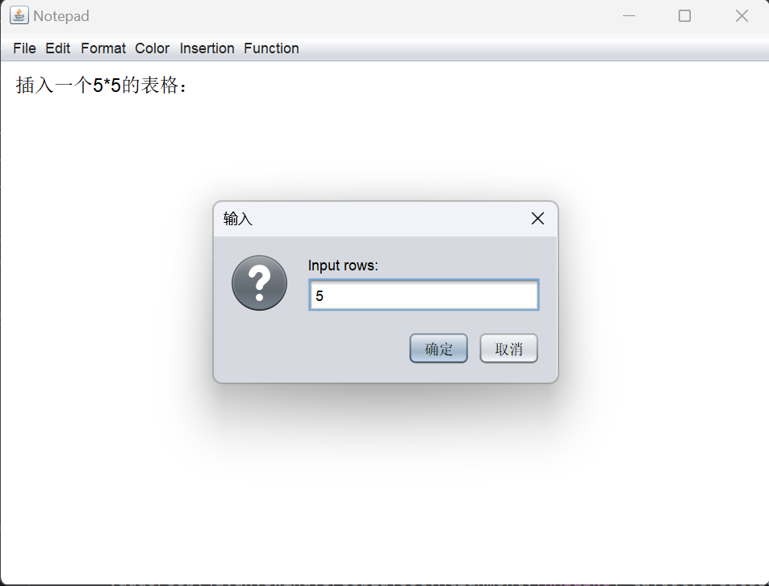
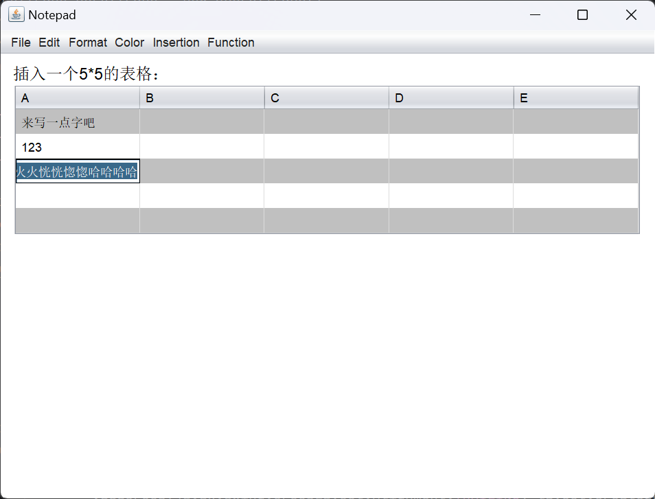

插入表格
插入表格比较简单，因为java swing提供了JTable类，只需要利用它创建表格然后插入JTextPane即可。创建表格的方法需要传入JTextPane作为参数，其总宽度与当前JTextPane相等，总高度为行高（设为24）乘上行数。行数与列数由用户输入。主体代码如下：
private JTable createTable(int rowCount, int colCount) {
DefaultTableModel tableModel = new DefaultTableModel(rowCount, colCount);
JTable table = new JTable(tableModel);
// 设置每行的高度为24像素
int rowHeight = 24;
table.setRowHeight(rowHeight);
// 设置整个表格的高度为行数乘以每一行的高度
table.setPreferredScrollableViewportSize(new Dimension(table.getPreferredScrollableViewportSize().width, rowCount * rowHeight));
// 自定义竖直分割线颜色为白色
table.setGridColor(new Color(220,220,220));
// 显示竖直分割线
table.setShowVerticalLines(true);
// 使用自定义的 TableCellRenderer，使单元格内容支持换行
table.setDefaultRenderer(Object.class, new MultiLineTableCellRenderer());
return table;
}
不过直接创建的表格存在两个小问题。一是由于行高固定，输入长度也就变得有限了。二是表格的外观与UI界面不搭配。
优化单元格：创建继承自Jtext的子类，实现接口TableCellRenderer，重写单元格为可支持多行的单元格（不过由于原本的行高被限制，所以单元格以长条形式显示）
private static class MultiLineTableCellRenderer extends JTextArea implements TableCellRenderer { public MultiLineTableCellRenderer() { setLineWrap(true); setWrapStyleWord(true); setOpaque(true); } @Override public Component getTableCellRendererComponent(JTable table, Object value, boolean isSelected, boolean hasFocus, int row, int column) { setText(value != null ? value.toString() : ""); setSize(table.getColumnModel().getColumn(column).getWidth(), getPreferredSize().height); return this; } }修改表格外观：继承DefaultTableCellRenderer类，写一个新的渲染器类修改表格样式
public class CustomCellRenderer extends DefaultTableCellRenderer { @Override public Component getTableCellRendererComponent(JTable table, Object value, boolean isSelected, boolean hasFocus, int row, int column) { Component c = super.getTableCellRendererComponent(table, value, isSelected, hasFocus, row, column); // 在这里添加你的样式逻辑 // 例如，设置背景颜色或文本颜色 if (row % 2 == 0) { c.setBackground(Color.lightGray); } else { c.setBackground(Color.white); } return c; } }
最终效果如下：
插入表格 
表格外观 